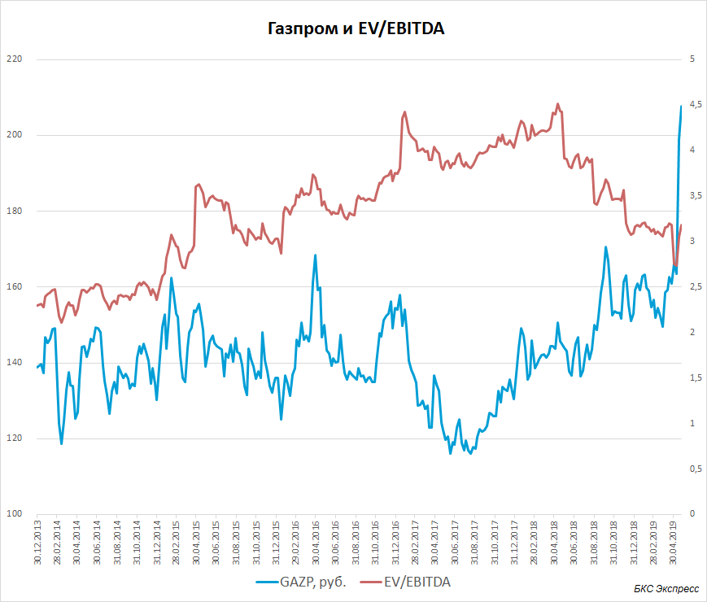
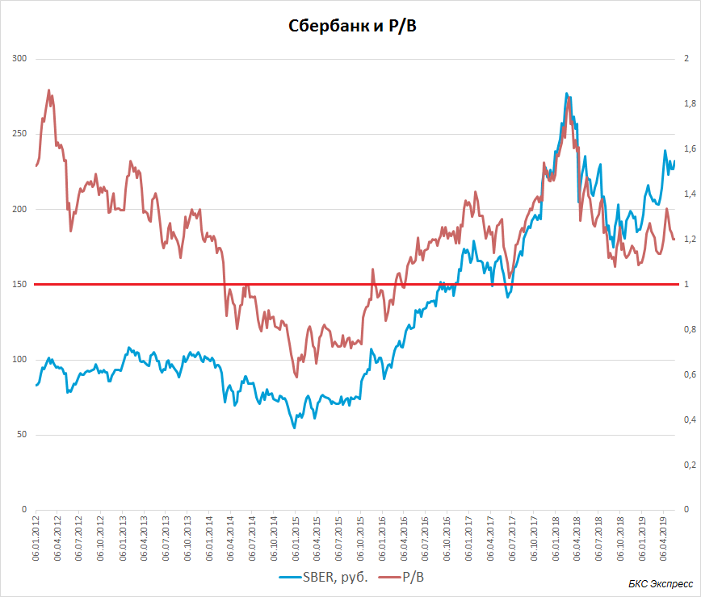
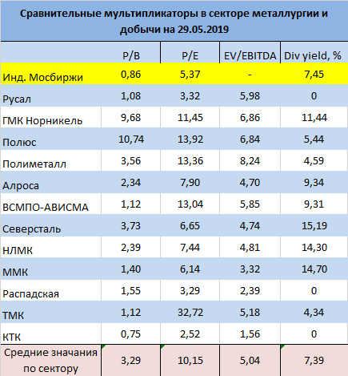
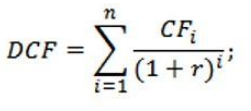

Бенджамин Грэм вместе с Девидом Доддом по праву считаются основателями такого подхода, как стоимостное инвестирование. В I части обзора мы уже дали определение этой стратегии. Целью этого подхода является поиск компаний, внутренняя стоимость которых выше текущей рыночной оценки. Под внутренней стоимостью понимается совокупность реальной стоимости чистых активов компании и способности бизнеса приносить требуемый доход.
Стоимостное инвестирование как метод подбора акций в портфель инвестора зародился в 30-е годы прошлого столетия в США. Последствия Великой депрессии в наибольшей степени повлияли на методику и философию инвестирования Грэма и Додда. Инвесторы предпочитали приобретать акции, цена которых была ниже стоимости активов в собственности самой компании.
Грэм говорил, что как только инвестор покупает такую акцию, он сразу приобретает некий «запас прочности» на случай ухудшения ситуации, сохраняя при этом потенциал получения прибыли при росте цены акции и ликвидации рыночной недооценки. Иногда методику покупки компании с большим дисконтом к внутренней стоимости называют «инвестициями в окурки». Ниже мы поясним, откуда взялась такая аналогия.
К наиболее видным инвесторам, исповедующим стоимостное инвестирование, нужно отнести Уоррена Баффета. Начав путь инвестирования с 20 лет, он в 1970 г. возглавил одну из крупнейших инвестиционных компаний Berkshire Hathaway. Одним из самых известных его изречений является: «It's far better to buy a wonderful company at a fair price than a fair company at a wonderful price», что в переводе: «Лучше купить прекрасную компанию по честной и справедливой цене, чем честную компанию по прекрасной цене». Иными словами, Баффет также призывает смотреть в первую очередь на внутреннюю стоимость бизнеса, у затем уже на ценовую динамику акций и возможные перспективы компании.
Существует несколько различных способов оценки стоимости акции, каждый из которых имеет свои плюс и минусы. После биржевого краха 1929 г. самое пристальное внимание уделялось стоимости активов компании. Когда мы говорим про стоимость активов, мы подразумевает балансовую цену акции (Book Value per Share). Подробнее об этом параметре мы писали в специальном обучающем материале.
Так вот, ранее основным критерием принятия инвестиционного решения был дисконт балансовой цены акции к биржевой цене. Для удобства стали использовать коэффициент P/B (Price to Book Value per Share).
Ниже в качестве примера будет приведена таблица эмитентов из индекса МосБиржи с соответствующими коэффициентами P/B. Более привлекательной и недооцененной бумагой является акция с меньшим коэффициентом P/B. Считалось, что в случае банкротства и ликвидации таких компании инвестор может вернуть большую часть своих вложений, так как акция стоила меньше, чем приходилось на нее имущества фирмы.
Но подход стоимостного инвестирования эволюционировал и с течением времени все больше внимания уделялось прибыли и денежным потокам компании. Компании с P/B ниже единицы, но с отсутствием стабильной прибыли, могли прибегнуть к реализации своего имущества, выпуску новых акций, увеличению долга в качестве попытки улучшения дел в компании. Тем самым балансовая стоимость акции могла продолжать снижаться. В итоге метод стоимостного инвестирования стал дополнительно опираться на поиск недооцененных компаний с точки зрения прибыли и денежных потоков.
В I части обзора путем логических рассуждений и благодаря примерам мы показали, что цена акции в большинстве случаев зависит от получаемой компанией прибыли. Прибыль можно представлять по-разному: в форме чистого квартального показателя, за последние 12 мес. или в виде EBITDA. Несмотря на общую неплохую корреляцию цены акции и доходов бизнеса, временами инвесторы излишне оптимистичны и пессимистичны.
Задачей стоимостного инвестирования стал поиск компании, цена которой снизилась, а прибыль или денежный поток не изменились. Можно также говорить о различных других сочетаниях этих двух переменных, например о росте прибыли без адекватной ценовой реакции в бумагах. Во всех случаях мы приходим к снижению стоимостного мультипликатора P/E (Price to Earnings, цена акции / чистая прибыль). Это и есть реальное удешевление компании, недооценка.
Важно: основоположники и самые известные продолжатели стоимостного инвестирования распространяли свои методики только на акции относительно крупных известных компаний и устойчивых брендов. Шансы на то, что крупная компания с многолетней историей останется на рынке, а снижение рыночной оценки является лишь неэффективностью рынка, выше, чем для малоизвестного эмитента третьего эшелона.
Более универсальным будет использование вместо чистой прибыли показателя EBITDA или OIBDA, которые характеризуют операционные денежные потоки компании. Но так как этот денежный поток приходится на всех инвесторов компании, как держателей долга так и акционеров, то в числителе вместо цены акции используют показатель EV (Enterprise Value = Капитализация компании + чистый долг). То есть искомый мультипликатор будет выглядеть так: EV/EBITDA. Ниже будет представлена таблица некоторых акций российского рынка с соответствующими параметрами.
Важно: в качестве мультипликаторов для оценки относительной стоимости компании иногда используют и другие показатели. Например: EV/Sales (Enterprise Value к выручке), ROE (Return on Capital, возврат на собственный капитал), дивидендную доходность, Debt/EBITDA (соотношение долга и EBITDA) и др. Описание и способы применения этих характеристик вы можете найти в нашей широчайшей базе обучающих материалов.
Сами по себе цифры мультипликатора P\E или EV\EBITDA не покажут инвестору, дешевая компания или нет. Существует две различные методики оценки таких показателей, которые помогут внести больше ясности.
Показатели прибыли
Снижение EV/EBITDA компании с 6х до 5х не дадут инвестору много полезной информации, если не посмотреть на историю. Для примера возьмем акции Газпрома. С конца 2013 г. мы видим, как бумага на самом деле дорожает. Показатель EV/EBITDA (правая шкала) вырос с 2,5х до выше 4х к началу 2018 г. При этом цена все время колебалась в боковом формате.
По мере роста EBITDA компании инвесторы не торопились переоценивать акции, что привело к снижению стоимости Газпрома до отметок ниже 3х EV/EBITDA. То есть компания стоила на тот момент всего лишь три годовые прибыли до выплаты налогов и процентов с учетом амортизации. Это создавало хорошую возможность для покупки подешевевшей акции. Такими образом, несмотря на локальный рост котировок, компания на самом деле дешевела. Повышение прибыли привело к росту дивидендных отчислений, что в мае 2019 г. ускорило переоценку акции.
Газпром отнюдь не простой пример. Это компания со множеством особенностей, включая высокую инвестиционную программу. Но даже в этом случае беглый взгляд на историческую относительную стоимость компании дает правильное представление о наиболее ожидаемом движении котировок акции.
Стоимость активов
Другой пример оценки исторической внутренней стоимости – использование показателя стоимости чистых активов или отношения цены акции и ее балансовой стоимости (P/B). Наиболее интересен этот показатель у банков, потому как активно меняется в зависимости от фундаментальных экономических условий. При этом его диапазон изменений достаточно небольшой, что обусловлено характером активов.
Самый наглядный пример – Сбербанк. Акция начала стоить дешевле своей балансовой стоимости в начале 2014 г. на фоне кризисных явлений в экономике (P/B опустился ниже 1, правая шкала). Инвесторы опасались ухудшения качества кредитного портфеля и соответствующих списаний. Но благодаря своевременным действиям регулятора, росту ставок в экономике и «банковской чистке», показатели банка нормализовались, а биржевые котировки росли более высокими темпами, что увеличивались чистые активы банка.
То есть судя по соотношению биржевой и балансовой цены, Сбербанк условно считался недооцененным при P/B ниже 1х. Ближе к 2х можно говорить о переоценке акций. Важно помнить, что использование лишь одной метрики – неверная тактика. К примеру рост активов банка может не приводить к адекватному росту прибыли. В результате акция уже не будет выглядеть такой недооцененной.
Для справки, ROE Сбербанка (возврат на капитал) в последние годы держался устойчиво выше 20%, что является отличным результатом для банка такого масштаба.
Другая методика подбора акций с использованием популярных мультипликаторов заключается в сравнении компаний одного сектора или конкретного эмитента с основным биржевым индексом. Желательно при этом не выходить за рамки одной страны или группы стран с характерными признаками (развитые/развивающиеся). В данном случае чаще всего используются показатели прибыли, операционного денежного потока или дивидендной доходности. Ниже приведена таблица акций сектора металлургии и добычи индекса МосБиржи с соответствующими мультипликаторами.
С точки зрения собственного капитала (чистых активов) самой недооцененной является КТК. Эта же компания самая дешевая с точки зрения чистой прибыли на акцию (P/E) и EV/EBITDA. Всего 1,5 доналоговые прибыли с амортизацией за последние 12 мес. Одной из самых дорогих компания сектора является Полиметалл.
По дивдоходности за последние 12 мес. в лидерах черная металлургия и ГМК Норникель. Многие из них относительно недорогие с точки зрения цены акции и стоимости активов и цены акции к прибыли.
Если сравнивать с индексом в целом, то мы видим, что рынок оценивает акции металлургов заметно выше их балансовой стоимости. Вероятно, это является следствием довольно стабильного денежного потока и высокой отдачи инвесторам для большинства компаний сектора.
Важно помнить, что стоимостное инвестирование применимо к устойчивым компаниям и сильным брендам. Если компания дешевая – это не значит, что она автоматически становится недооцененной.
Уоррен Баффетт – легендарный инвестор, рьяный почитатель стоимостного инвестирования говорил: «Если вы хотите преуспеть в корпоративных финансах (стоимостном инвестировании) – вы должны верить, что земля плоская». Этими словами Баффетт как бы признает, что в основе стоимостного инвестирования лежит предположение, что рынок заблуждается на счет будущего того или иного эмитента. То есть эффективность рынка в этом отношении ставится под сомнение.
Это довольно тонкий момент, который требует ответов на неудобные вопросы. Что заставляет цену акции снижаться, когда прибыль стабильна или растет? Почему другие инвесторы продают то, что я хочу купить? Каково мое конкурентное преимущество?
Ответы на эти вопросы частично дает современный метод оценки справедливой стоимости акции.
Это более сложный метод оценки стоимости компании, который к тому же несет в себе ряд ограничений. Наиболее точную оценку внутренней стоимости компании (справедливой) этот метод дает для зрелого бизнеса, с предсказуемым рынком, капзатратами и будущими денежными потоками. Например, это могут быть крупные производители товаров первой необходимости, ритейлеры в развитых странах, компании из коммунального сектора.
Очевидно, что все доходы и все, чем владеет компания, принадлежит акционерам и держателям ее долга. Цена акции есть не что иное, как плата за возможность распоряжаться и получать будущие денежные потоки компании в рамках приходящейся на ценную бумагу доли. Иными словами, справедливая цена акции на какой-то момент в будущем – это совокупность будущих денежных потоков, приходящихся на нее.
Для того чтобы привести будущую цену акции к текущей, необходимо все ожидаемые будущие денежные потоки и конечную стоимость компании продисконтировать по соответствующей ставке, обязательно учитывающей стоимость капитала и риски конкретного эмитента и т.д. Более подробно этот метод разбирался в нашем специальном обзоре. В общем же случае формула справедливой цены акции выглядит так:
Здесь DCF – справедливая оценка акции, суммированный денежный поток, CF – денежный поток компании за один период, r – ставка дисконтирования.
Исходя из приведенной выше идеи, снижение цены акции сегодня отражает ожидания инвесторами падения денежного потока в будущем. Под снижением денежного потока часто понимают падение выручки или рентабельности и вместе с этим снижение прибыли. Справедливо и обратное утверждение. Если цена акции растет, рациональные инвесторы ожидают улучшения финансовых показателей компании, увеличения денежных потоков в будущем.
То есть падение таких показателей как P/E и EV/EBITDA можно рассматривать как недооценку, неэффективность рынка. А можно рассматривать как попытку инвесторов сыграть на опережение, попытку отыграть будущее изменение денежных потоков. Насколько реалистичными окажутся предположения инвесторов, вопрос открытый. Мы видим, как многочисленные подтверждения, так и нередкие исключения, необъективности рынков.
Согласно методике дисконтирования денежных потоков, справедливая оценка акции может также варьироваться и при изменении ставки дисконтирования. Ставка дисконтирования в свою очередь зависит от безрисковой ставки, премии за риск страны инвестирования, премии за риск отрасли или конкретного эмитента, а также премии за ликвидность торгующейся бумаги.
В итоге, несмотря на ряд вопросов к методу, в том числе к точности прогнозов будущих операционных результатов компании, он дает отличное объяснение ряду устоявшихся закономерностей на рынке.
Теперь становятся понятным рост рынка акций при снижении ставок ЦБ. Или просадка рынка на фоне роста страновых рисков. Также теперь мы можем понять, как могут отразиться на котировках акций планы компании увеличить или уменьшить количество торгующихся на бирже акций (Free-Float).
Метод дисконтирования денежных потоков не так хорошо себя показывает в акциях циклического сектора, развивающихся бизнесах. Но стоит отметить, что даже если вы не собираетесь детально прогнозировать будущие денежные потоки, оценивать риски бизнеса, высчитывать ставку дисконтирования и искать справедливую стоимость акции, этот метод очень полезен, так как заставляет более детально разобраться в бизнесе интересующей компании, оценить конкурентов, поискать драйверы для развития сектора в целом, оценить влияние политики Центробанков на динамику акций.
Когда мы говорим про стоимостное инвестирование и упоминаем Баффета, Грэма и дргугих, мы обязательно должны помнить о вспомогательных методиках, которые помогают добиться соответствующих результатов.
Несмотря на то, что практика стоимостного инвестирования является самой разумной из несложных и доступных методов рядовому инвестору, существует и конструктивная критика такого подхода.
Согласно представлениям современного метода дисконтирования денежных потоков, стоимостной инвестор покупает подешевевшую бумагу в надежде, что рынок уже заложил или почти заложил будущие негативные изменения в инвестиционном кейсе. Но лишь в одном из трех возможных исходов такой инвестор заработает. Вот возможные варианты. Для простоты будем рассматривать только покупку акций.
1. Если рыночные ожидания будут излишне пессимистичными или реальность под влиянием множества факторов в итоге окажется совсем противоположной. Тогда можно рассчитывать на быстрое восстановление капитализации компании к внутренней стоимости компании.
2. Если же рынок оказался прав в оценке будущих фундаментальных изменений, показатели дохода компании снизятся. При этом соответствующего падения цены акции уже не произойдет, а относительные мультипликаторы вырастут (хороший пример Газпром в 2014-2015 гг.). Это то, что Грэм называл «запасом прочности». Очевидно, что ни один инвестор точно не понимает, как долго может продлиться такое состояние бизнеса. Газпром был в Боковике на протяжении нескольких лет, прежде чем начал активное движение вверх.
Но стоимостные инвесторы справедливо полагают, что менеджмент под давлением акционеров, совета директоров и прочих факторов будет стремиться вернуть компанию к более ранним позитивным показателям дохода. Поэтому так важно смотреть именно на крупный, прозрачный бизнес с сильным брендом.
3. Если окажется, что рынок недооценил негативные факторы, или после покупки акции стоимостным инвестором возникли новые непредвиденные угрозы для бизнеса, тогда цена акции продолжит падать, а так называемая «недооценка» продолжит увеличиваться. Таких примеров в истории рынка не мало. Таким образом, на повестке остается вопрос о том, что считать недооцененной компанией.
Другим направлением критики рассматриваемого метода является как раз концентрация инвестирования только на зрелых компаниях и известных брендах. По мере развития экономики и технологий на рынке появляются много имен, которые еще 5-10 лет назад были малоизвестным стартапом, но с большими и понятными перспективами. Речь идет о Google, Facebook, Amazon, Apple и т. д. Тот же Баффетт, возможно, слишком поздно заметил Apple и сожалеет, что не рискнул вложиться в Amazon. Кстати говоря, P/E, EV/EBITDA и другие стоимостные характеристики этих компаний все это время были зашкаливающие и лишь к моменту зрелости бизнеса начали приходить в норму. То есть стоимостной инвестор и по этим критериям обойдет такие эмитенты стороной.
Отсюда идет и метафора об «инвестициях в окурки», о которой говорилось в самом начале этого материала. Это компании, прошедшие пик роста прибыли. Низкие мультипликаторы, как правило, указывают на скромные шансы на заметный рост доходов, по крайней мере на данной итерации жизни компании. То есть «инвестиционный кейс выгорел» и все уже в цене.
В то же время на текущий момент будущими гигантами и лидерами отраслей могут стать Tesla, Uber или не торгующийся еще на бирже производитель робототехники с применением искусственного интеллекта Boston Dynamics. Эти компании сейчас выглядят убыточными, неустойчивыми или малоизвестными, не являясь выбором стоимостного инвестора. Но самую высокую прибыль долгосрочный инвестор может получить как раз инвестируя в такого рода истории. Естественно стоит добавить, что и риски по таким эмитентам всегда выше из-за неопределенности по поводу степени реализации оптимистичных планов компании.
Практика стоимостного инвестирования – безусловная база инвестора. Этот разумный метод хорошо подходит для участников рынка, инвестирование для которых не является основным ежедневным занятием.
Если совместить этот подход с методом дисконтирования денежных потоков компании, можно получить более понятную картину инвестиционного кейса и в ряде случаев довольно точные количественные оценки справедливой оценки акции. Как и любой другой метод, стоимостное инвестирование не лишено недостатков. Но верные вспомогательные практики диверсификации и сложный процент помогут инвесторам добиться финансовых успехов.